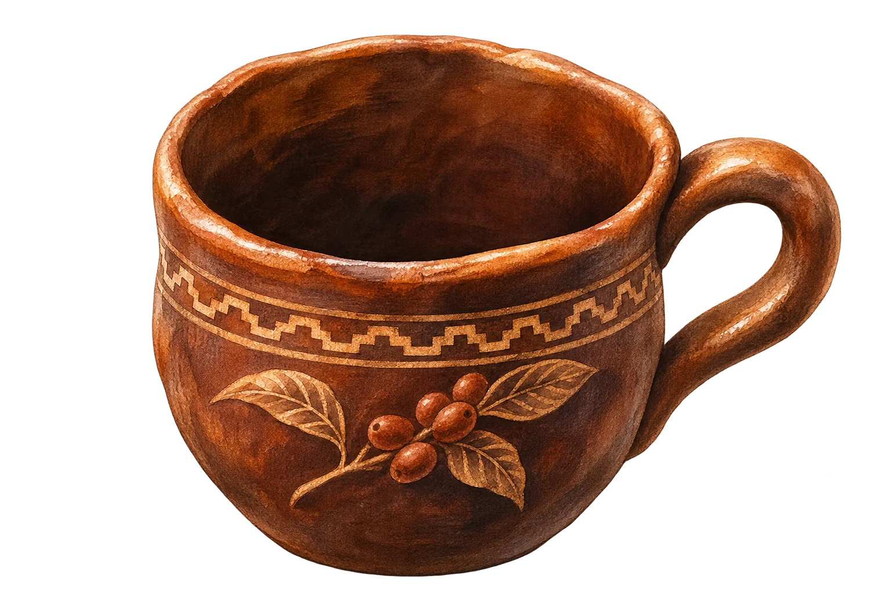
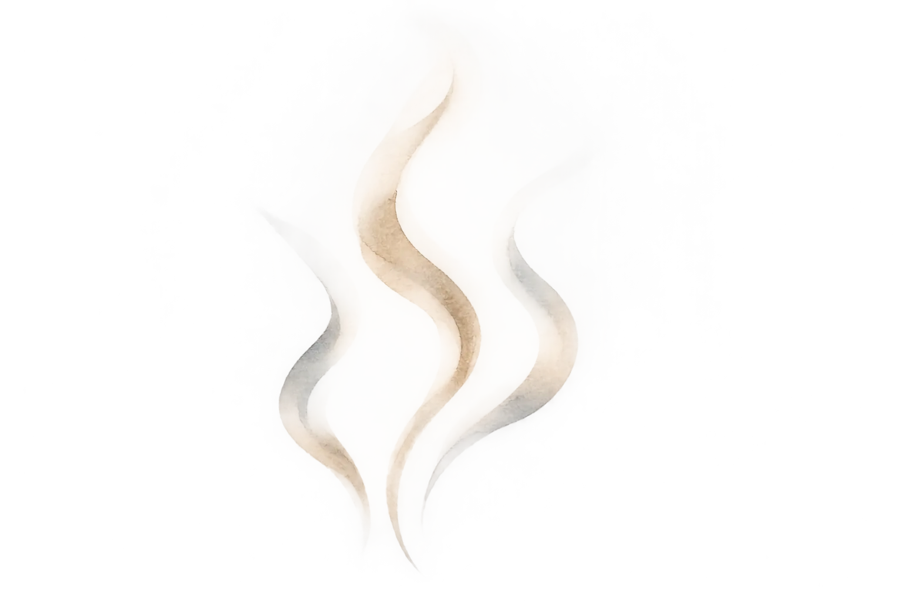

El camino del café
El scroll hace caer un grano, lo rompe en granitos y los junta en una taza andina. Sin video, sin canvas: solo imágenes, transform y una timeline atada al scroll.


Actividades
Catas, filtrados y encuentros con las marcas de Loja. El scroll sigue, la taza ya está servida.
50 especialidades